10 Mar 2012
This is my 2012 7-Day Roguelike entry.
You are Topdog, The Puppy has been kidnapped by the Fat Cat Mafioso. You travel from yard to yard, searching for the crafty Cats holding her hostage. Along the way you meet other animals, and perhaps a bone or two.
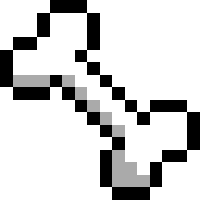
Made with Python with SDL and Libtcod.
The Idea: Minimalism and fun, is the primary goal. Replayability is a given, with a low learning curve. To achive this, some classic RL mechanics are simplified, and complimentary Role Playing elements are introduced:
Timeline
- Day 1: Game Spec
- Day 2: Flesh out classes and their properties, helper functions, and game loop
- Day 3: Map generation, object item and NPC stats + descriptions, Object interactions and inventory
- Day 4: Combat and flee system, NPC AI
- Day 5: Quest system
- Day 6: Bug testing, UI polish and balancing
- Day 7: Saved for Murphey's Law
How To Play
Get the source code
Python comes with most Linuxes. For Windows you have to download Python.
Playing
Use the number keypad to move around. Walk over toys to pick them up. Press 'd' to drink water when thirsty. Move to the next level/yard by moving onto a hole in the fence.
12 Mar 2012
The game spec is going fine, I expect many changes albeit most of it is good to go.
You can read the entire spec online on github.
You can move around, and there are blocking tiles, a garden fence with holes in it. Some shrubs, trees and water too. These are placed for testing tile interaction only, their final placement will be better.
Game state machine and some helper functions are also in. Ahead of schedule is nice :-)
I also pushed the source to GitHub, see the "Source" Link in my sidebar.
Here is a shot of my desktop during development (290kb).
The game window:
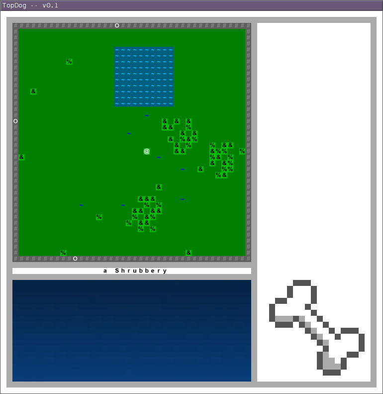
13 Mar 2012
Added some fluff while fleshing out the classes, the commit summary speaks to us in a robot voice:
20842c9 add terminal 16x16 font (nice and large for hi res)
b41e65a spawn pools more away from fences. fiddled with colors. I should probably commit smaller changes more often.
20235e6 Allow moving through holes to other yards.
2622bee changed the screen size, changed colors. added blocking messages.
71eb42b switched to terminal font to support ascii symbols.
The new fontmap gives us nice ASCII characters like spades and wotnots, also see some colorful message highlighting:
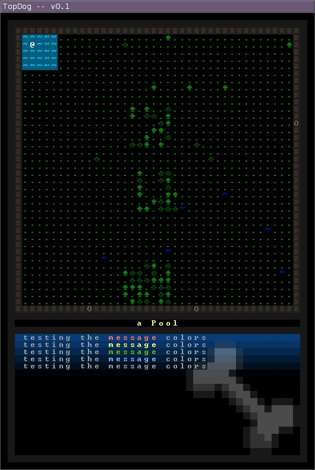
Started that level in the middle of the Pool, oops.
This is the first time I'm using GIT source control, my HG knowledge slots in well so using it is a breeze.
Times like these you appreciate VIM syntax highlighting :D
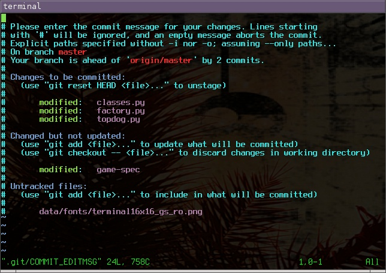
13 Mar 2012
We can now load map templates from ASCII :-)
See my latest code commits on GitHub 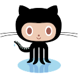
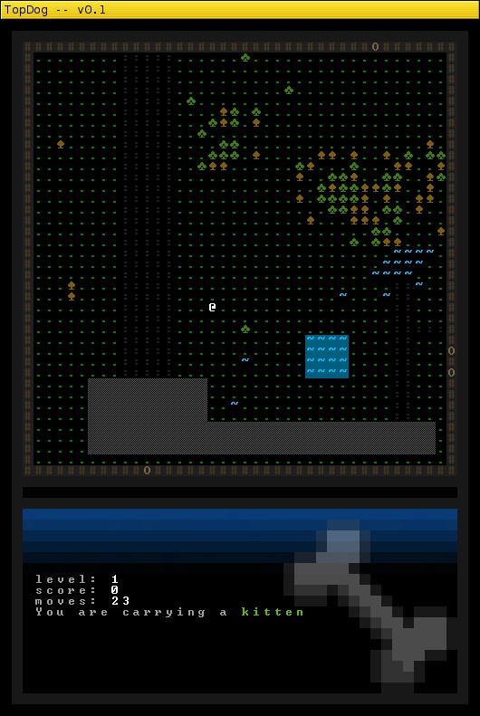
Python rocks for dynamic code calling, it is the the Dog's Bark ;D
We can make a dictionary of map characters, and perform a lookup against it. Matching entries are function references (gettar, getpuddle):
tile_lookup = {
CHAR_TAR: get_tar
,CHAR_WATER: get_puddle
}
We can easily call these functions, inline and without much flak:
if ascii_map_char in tile_lookup:
gamemap[x][y] = tile_lookup[ ascii_map_char ]()
14 Mar 2012
This update is brought to you by Dynamically loaded maps, FOV (Field Of Vision), colorful flowers, and inventory.
You can pick up doggy toys by moving over them. Since you carry in your mouth, you drop whatever you were carrying before each time. You can carry items across levels. Dogs really do this... no really.
More tweaking to colors, for flowers bushes and trees. The heart item here is a doggy toy. All toys show as different colored hearts.
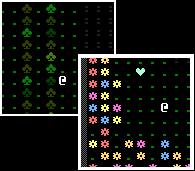
FOV determines what you can see via line-of-sight. Here you see where I highlighted (in pink) where the tree blocks our sight, the tiles beyond it are greyed out.
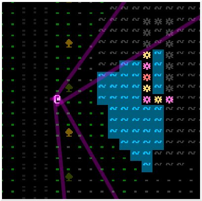
Maps can now load from text files. I found an awesome ASCII Paint app to draw maps with. They are essentially text files, 36x36 characters in size. B's get converted to bricks, b's to bushes, f's to flowers, t's to trees, ~'s to water, and #'s to fences.
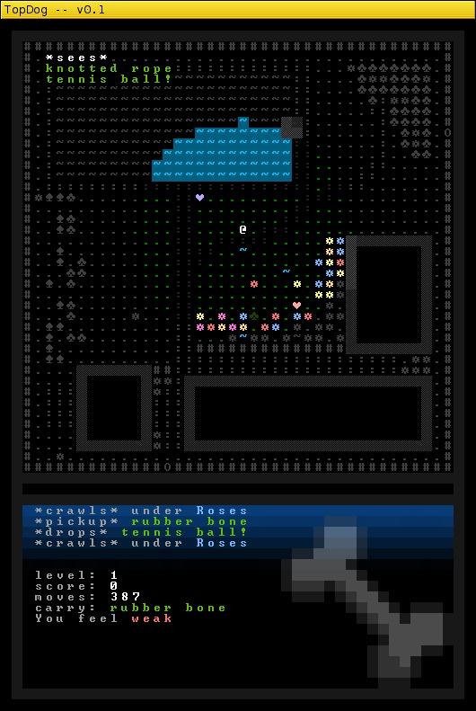
And here is editing the map:
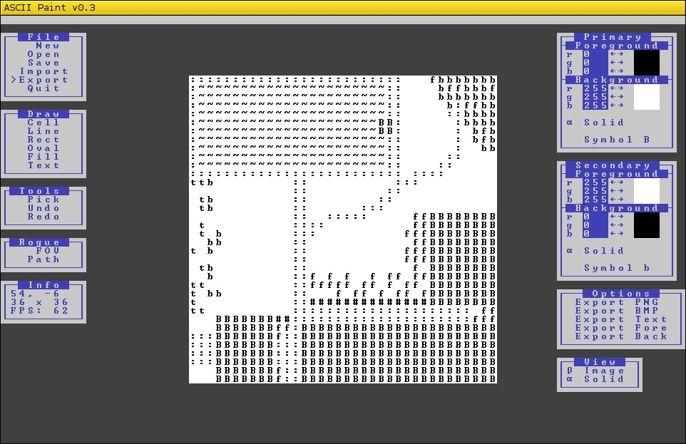
15 Mar 2012
Day 4 was in the zone, like being with Mercer, but Do Androids Dream of Electric Sheep? Sit down, have a doggy biscuit...
Changes
glossary: NPC is a Non Player Character. All the other animals in game, whether they are friend or foe.
Simplified the UI, a lot! No more superfluous details on screen, those will go into their own screen. You only see what is necessary to win:
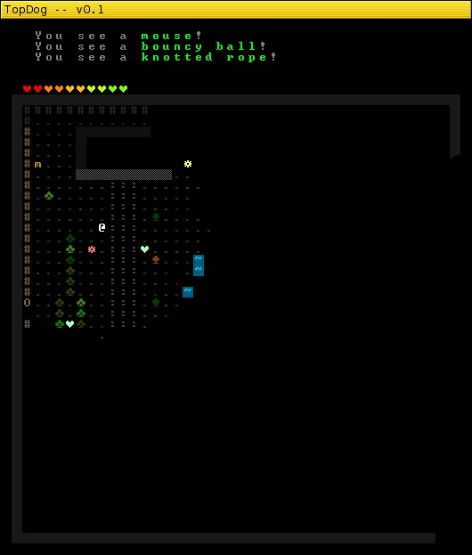
We have interactive NPC's. Some are friendly, others hostile. They can have arbitrary amount of dialogue, run away from you, hunt you down, follow you around and give you quests.
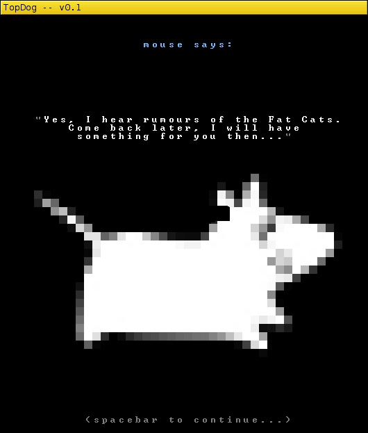
We have NPC's that have various behavior models: skittish, neutral, friendly, hunting. They also have interaction models, hostile NPC's can take initiative and attack you first, while friendly's start a conversation or give you quests.
The Hunting movement AI is pretty crafty: It uses A* path finding to follow you. If it loses sight of you, it remembers where it saw you last, and heads there to search you out. This could be improved on by implementing scent trails (for real hunters).
Python is amazing for dynamic code structures. Up to now it was a lot of class models for Inheritance and Polymorphism. Functional languages give us Composition, something I can see will work well in business rule engines.
Enough rambling, we need a working quest engine, hint and scent trails, and like-to-have mouse support.
- 6 hours ago: friendly npc's follow a distance.
- 7 hours ago: scared ai fixes
- 7 hours ago: Fix bug when they lose sight of you.
- 7 hours ago: hunters use A* to track you down. they even remember your last known position.
- 8 hours ago: Attacking works now, with victim also getting a turn.
- 8 hours ago: more MoveAI code.
- 9 hours ago: flying npc's can move through blocking tiles
- 9 hours ago: Include ActionManual for the Player. this allows both NPC's to initiate conversation with the Player, and vice versa.
- 11 hours ago: start of passing NPC player dialogues
- 11 hours ago: only move NPC's if our player moved. ie hitting a wall doesnt count.
- 11 hours ago: action_ai logic passes dialogue, quests or hostility.
- 12 hours ago: AnimalBase has taketurn implemented. NPC's can move around, and recognize when they hit another. The have moveai and action_ai attributes which get called on interaction.
- 13 hours ago: refactored Object() into ItemBase() and AnimalBase()
- 16 hours ago: replaced "you see' list with cleverness: show in message list only once.
- 17 hours ago: changed UI, shuffled message positions, removed detailed info (to have its own screen)
17 March 2012
There is under 10 hours left, the core mechanics of the quest engine and game interactions is as much done as I have time for. All that remains is fleshing out the story line, and coding it in. Been going for 14 hours now, taking a breaker to be fresh-brained to write creative story lines.
What the playing screen looks like now:
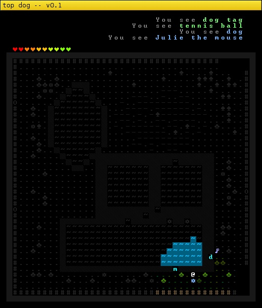
Dialogue screens have matching pictures of the animals you talk to:
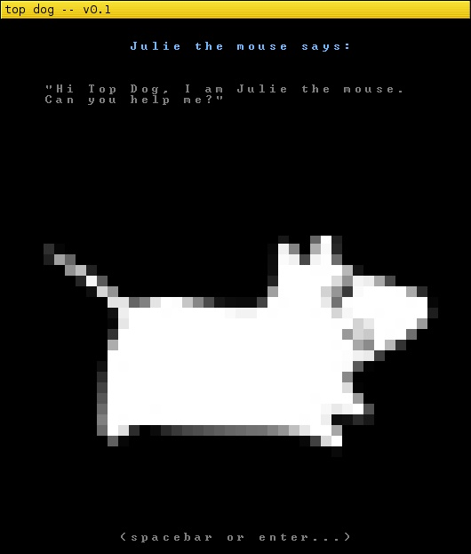
They can chirp you before a fight:
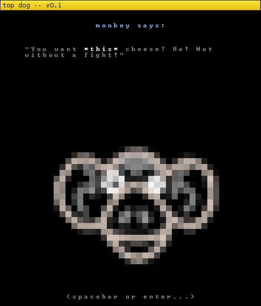
The stats screen shows your progress, and any quests you are busy with:
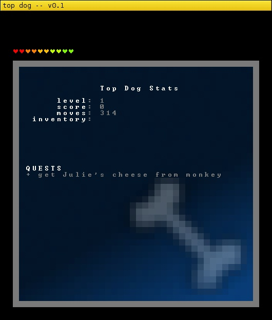
I won't bore you with any commit logs this time, you can read them online at your leisure.
WOOF!
22 Mar 2012
It is past the comp submission date, so all changes from here on are post-challenge polish. Hey, even chickens need lipstick...
Notably:
- prettified colorization. your visible fov looks more solid, less crufty and more tasty.
- colorized cutesy animal icons. it was bound to happen.
- player can lose: if your health drops, you have to redo the level.
- the Puppy now says his thanks.
- end game stats screen that saves as a screenshot for printing your own x-mas cards this year!
- 10 cutesy animal icons for your eyeball pleasure ^_^
The game menu
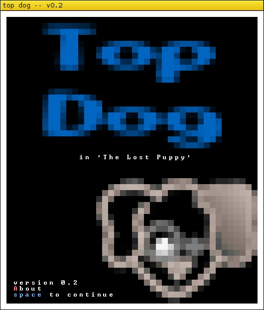
A gameplay screen
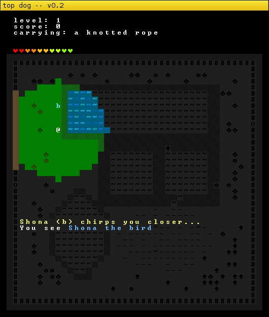
An in-game dialogue

The help screen
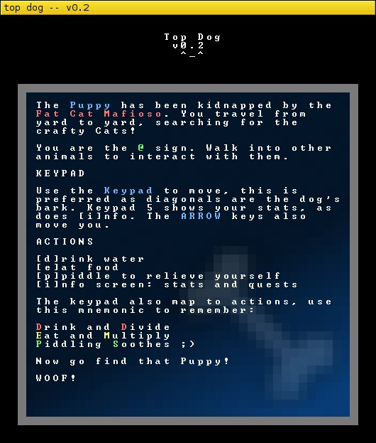
Another gameplay screen
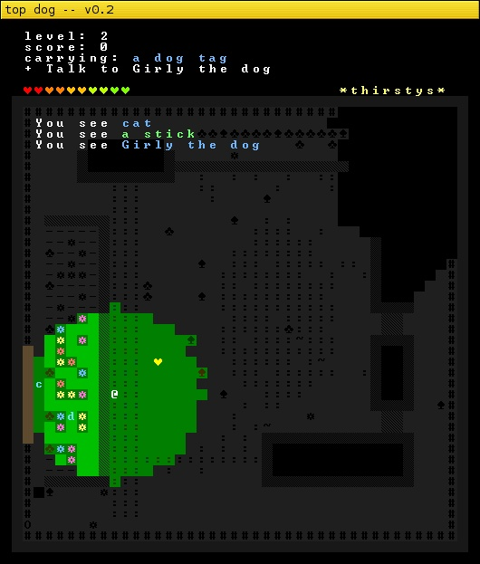
{kind=link}